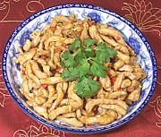

|
Pork Strips with SauceChina - Sichuan | ||||
| Serves: Effort: Sched: DoAhead: |
2 main ** 45 min Yes |
Simple and simply delicious. You can control the hotness to your preference - two Fresno chilis makes it "just spicy" by Southern California standards, (opinions may differ in Fargo). | |||
|
14 ------ 1/2 1/8 1-1/2 ------ 2 1/4 2 3 ------ 1/3 1 1 1 1/3 1/2 ------ 2 |
oz --- t t T --- in cl --- c T t t t t --- T |
Pork, lean (1) -- Marinade Salt Pepper Cornstarch -- Aromatics Chilis Red (2) Ginger Root Garlic Scallions -- Sauce Stock Soy Sauce Black Vinegar (3) Sugar Sesame Oil Cornstarch --------- Lard or Oil (4) |
Prep (15 min)
|